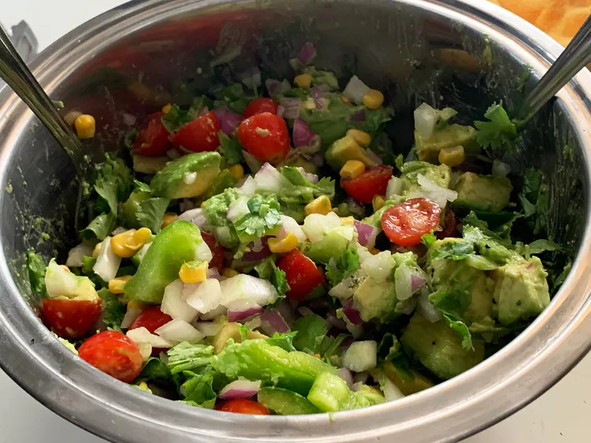

Avacado Salad

Description
This avocado salad is a delicious combination of ripe avocados, sweet onions, fresh tomatoes, and cilantro. This recipe is so easy to make and very colorful — I think you'll like it!
Ingredients
- Avocados: This recipe starts with two peeled, pitted, and diced avocados.
- Onion: A chopped sweet onion lends a bold flavor.
- Bell pepper: A chopped green bell pepper gives the salad a welcome crunch.
- Tomato: A chopped ripe tomato adds even more color and flavor.
- Cilantro: Chopped cilantro takes the flavor up a notch.
- Lime: Fresh lime juice adds brightness and prevents browning.
- Seasonings: Simply season the avocado salad with just salt and pepper.
Steps
- Gather the ingredients.
- Combine avocados, onion, bell pepper, tomato, cilantro, and lime juice in a large bowl.
- Gently toss until evenly coated. Season with salt and pepper